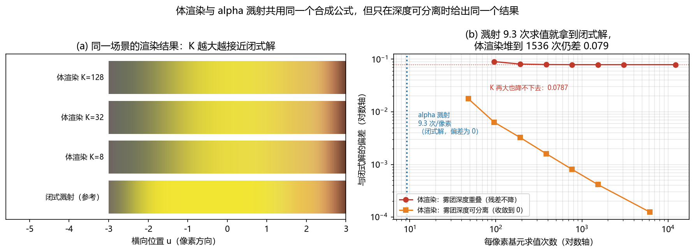

3D 场景世界模型：NeRF 与 3D Gaussian Splatting¶
预计阅读：18 分钟 | 前置知识：计算机视觉基础、射影几何、渲染原理
1. 3D 场景表示作为世界模型¶
与前两种范式不同，3D 场景世界模型直接建模环境的三维几何结构，提供：
graph TB
A[3D 场景世界模型] --> B[几何精确性<br/>精确的 3D 位置和形状]
A --> C[新视角合成<br/>从任意角度观察场景]
A --> D[物理约束<br/>几何结构隐式约束运动]
A --> E[可解释性<br/>3D 结构直观可理解]两种主要的 3D 场景表示方法——NeRF（Neural Radiance Fields）和 3DGS（3D Gaussian Splatting）——正在成为无人机世界模型的重要基础。
2. NeRF：神经辐射场¶
2.1 基本原理¶
NeRF（Mildenhall et al., 2020，ECCV 2020，arXiv:2003.08934）使用神经网络隐式表示 3D 场景的辐射场：
# NeRF 核心函数
F_θ: (x, y, z, θ, φ) → (r, g, b, σ)
# 输入: 3D 坐标 (x,y,z) + 观察方向 (θ,φ)
# 输出: 颜色 (r,g,b) + 密度 σ
graph LR
A[3D 坐标<br/>x, y, z] --> C[MLP 网络]
B[观察方向<br/>θ, φ] --> C
C --> D[颜色<br/>r, g, b]
C --> E[密度<br/>σ]
D --> F[体渲染]
E --> F
F --> G[2D 图像]2.2 体渲染方程¶
NeRF 使用体渲染（Volume Rendering）将 3D 辐射场渲染为 2D 图像：
C(r) = ∫_{t_n}^{t_f} T(t) · σ(r(t)) · c(r(t), d) dt
其中:
- C(r): 像素的最终颜色
- T(t) = exp(-∫_{t_n}^{t} σ(r(s)) ds): 累积透射率
- σ(r(t)): 位置 r(t) 处的密度
- c(r(t), d): 位置 r(t) 在方向 d 处的颜色
离散化近似：
# 分层采样
t_i = t_n + (t_f - t_n) * i / N # N 个采样点
# 累积透射率
T_i = exp(-sum(σ_j * δ_j for j in range(i)))
# 像素颜色
C = sum(T_i * σ_i * c_i * δ_i for i in range(N))
2.3 NeRF 的变体¶
| 变体 | 创新点 | 速度 | 质量变化 |
|---|---|---|---|
| NeRF (原始) | 基础 MLP | 基准：单卡 V100 约 1–2 天收敛 | 基准 |
| Mip-NeRF | 多尺度表示（抗锯齿） | 与 NeRF 同量级（论文：快 7%） | 更好（论文报平均误差 −17%） |
| Instant-NGP | 哈希编码 | 数量级提升（论文原话 "several orders of magnitude"） | 略降 |
| Nerfacto | 模块化设计 | 30 分钟级（论文：30K 步 / RTX A5000） | 论文自述略逊于 Mip-NeRF 360 |
| NeRF-SLAM | 实时 SLAM | 实时（论文未给具体倍数） | 论文自报优于竞争者（PSNR 最高 +179%） |
2.4 NeRF 作为世界模型¶
NeRF 作为世界模型的核心优势是提供精确的 3D 场景表示：
graph TB
A[NeRF 世界模型] --> B[场景查询<br/>给定 3D 位置，查询颜色和密度]
A --> C[新视角渲染<br/>从任意位姿渲染场景]
A --> D[碰撞检测<br/>查询密度判断是否可通行]
A --> E[路径规划<br/>在 3D 空间中搜索可行路径]NeRF 用于无人机导航的典型流程：
| 步骤 | 操作 | 输出 |
|---|---|---|
| 1 | 收集场景图像 | 多视角图像 + 相机位姿 |
| 2 | 训练 NeRF | 场景的隐式 3D 表示 |
| 3 | 场景查询 | 给定位置查询可通行性 |
| 4 | 路径规划 | 在 3D 空间中搜索安全路径 |
| 5 | 执行飞行 | 沿规划路径飞行 |
3. NeRF-Nav：基于 NeRF 的导航¶
3.1 论文概述¶
NeRF-Nav 系列工作探索了将 NeRF 作为无人机导航的世界模型：
核心思想： 1. 使用 NeRF 学习环境的 3D 表示 2. 在 NeRF 中进行路径规划 3. 利用 NeRF 的密度信息进行碰撞检测
3.2 碰撞检测¶
# NeRF 碰撞检测
def is_collision(nerf, position, threshold=0.5):
"""
查询 NeRF 在给定位置的密度
密度 > threshold 表示有物体（碰撞）
"""
density = nerf.query_density(position)
return density > threshold
# 路径可行性检查
def check_path(nerf, path_points):
"""检查路径上所有点是否安全"""
for point in path_points:
if is_collision(nerf, point):
return False
return True
3.3 路径规划¶
graph TB
A[起点 s] --> B[采样候选路径]
B --> C[NeRF 碰撞检测]
C --> D{是否安全?}
D -->|是| E[计算路径代价]
D -->|否| F[丢弃]
E --> G[选择最优路径]
G --> H[执行]路径规划算法：
| 算法 | 优势 | 劣势 | 适用场景 |
|---|---|---|---|
| RRT* | 渐近最优 | 速度慢 | 复杂环境 |
| PRM | 预计算 | 需要多次查询 | 多次查询同一场景 |
| 优化方法 | 平滑路径 | 可能陷入局部最优 | 连续空间 |
| 基于梯度 | 快速 | 需要可微分 NeRF | 实时规划 |
3.4 NeRF-Nav 的局限性¶
| 局限性 | 描述 | 解决方案 |
|---|---|---|
| 训练速度慢 | 原始 NeRF 在单卡 V100 上约需 1–2 天收敛 | Instant-NGP, Nerfacto |
| 推理速度慢 | 逐点查询效率低 | 批量查询, 空间索引 |
| 动态场景 | 难以处理移动物体 | Dynamic NeRF |
| 泛化能力 | 只能表示训练时见过的场景 | 预训练 + 微调 |
4. 3D Gaussian Splatting (3DGS)¶
4.1 基本原理¶
3DGS（Kerbl et al., 2023，SIGGRAPH 2023，arXiv:2308.04079）使用一组 3D 高斯函数表示场景，每个高斯有以下属性：
| 属性 | 符号 | 维度 | 含义 |
|---|---|---|---|
| 位置 | μ | 3 | 高斯中心的 3D 坐标 |
| 协方差 | Σ | 6 (对称) | 高斯的形状和方向 |
| 颜色 | c | 3 (或 SH) | 高斯的颜色 |
| 不透明度 | α | 1 | 高斯的不透明度 |
4.2 渲染过程¶
3DGS 使用"溅射"（Splatting）而非体渲染：
graph LR
A[3D 高斯集合] -->|投影| B[2D 高斯]
B -->|排序| C[深度排序]
C -->|Alpha 混合| D[最终像素颜色]渲染方程：
# Alpha 混合
C = Σ_i (c_i * α_i * Π_{j<i} (1 - α_j))
# 其中:
# c_i: 第 i 个高斯的颜色
# α_i: 第 i 个高斯的不透明度（经过 2D 投影和高斯函数计算）
# Π_{j<i} (1 - α_j): 前面所有高斯的累积透射率
4.3 NeRF vs. 3DGS¶
| 对比维度 | NeRF | 3DGS |
|---|---|---|
| 表示方式 | 隐式（MLP） | 显式（高斯集合） |
| 训练速度 | 慢（单卡 V100 约 1–2 天） | 快（全质量约 35–45 分钟；降质配置 5–10 分钟） |
| 渲染速度 | 慢（原论文：约 30 秒/帧） | 快（论文：合成场景 180–300 FPS） |
| 内存占用 | 小（论文：网络权重约 5 MB） | 大（存储所有高斯） |
| 可编辑性 | 困难 | 容易（直接操作高斯） |
| 质量 | 高 | 高（甚至更好） |
| 实时性 | 差 | 好（论文可达 100+ FPS） |
5. 3DGS 在无人机中的应用¶
5.1 实时 3D 重建与导航¶
3DGS 的快速训练和渲染特性使其非常适合无人机应用：
graph TB
subgraph 实时流程
A[无人机相机] -->|图像流| B[SLAM 系统]
B -->|相机位姿| C[3DGS 增量更新]
C -->|实时渲染| D[新视角合成]
C -->|3D 查询| E[碰撞检测]
E --> F[路径规划]
F --> G[控制指令]
end5.2 3DGS-SLAM¶
3DGS 与 SLAM 的结合是当前的研究热点：
| 方法 | 特点 | 实时性 | 精度 |
|---|---|---|---|
| SplaTAM | 稠密 SLAM | 整机约 0.4 FPS（跟踪 1.00 s/帧、建图 1.44 s/帧）；渲染 400 FPS | 高 |
| Gaussian-SLAM | 增量构建 | 建图 34 ms/迭代，论文未给整机 FPS | 中 |
| Gaussian Splatting SLAM（实现：MonoGS） | 单目 SLAM | 3 FPS（论文：单目 3.2 FPS、RGB-D 2.5 FPS） | 论文自称 SOTA |
| Photo-SLAM | 照片级质量 | 渲染最高 1000 FPS（嵌入式平台约 100 FPS） | 很高 |
5.3 3DGS 用于路径规划¶
# 3DGS 碰撞检测
def check_collision_3dgs(gaussians, query_point, threshold=0.1):
"""
检查查询点是否与任何高斯重叠
使用马氏距离判断
"""
for gaussian in gaussians:
diff = query_point - gaussian.mean
mahalanobis = diff.T @ gaussian.inv_covariance @ diff
if mahalanobis < threshold:
return True # 碰撞
return False # 安全
# 优化：使用空间索引加速
# - Octree
# - KD-Tree
# - Voxel Grid
5.4 3DGS 的可编辑性¶
3DGS 的显式表示使其易于编辑，这对无人机应用非常有价值：
| 编辑操作 | 应用场景 | 实现方式 |
|---|---|---|
| 添加物体 | 模拟新障碍物 | 插入新高斯 |
| 移除物体 | 清理场景 | 删除高斯 |
| 移动物体 | 动态场景 | 修改高斯位置 |
| 场景变换 | 任务规划 | 批量修改高斯属性 |
6. NeRF-SLAM：实时场景重建¶
6.1 论文概述¶
NeRF-SLAM（Rosinol et al., 2023，IROS 2023，arXiv:2210.13641）将 NeRF 集成到 SLAM 系统中，实现实时 3D 重建：
graph TB
subgraph SLAM 前端
A[相机帧] --> B[特征提取]
B --> C[位姿估计]
C --> D[关键帧选择]
end
subgraph "NeRF 后端"
D --> E[NeRF 训练]
E --> F[场景更新]
F --> G[新视角渲染]
end
subgraph 导航
G --> H[碰撞检测]
H --> I[路径规划]
I --> J[控制指令]
end6.2 实时性挑战¶
| 挑战 | 原始 NeRF | 解决方案 |
|---|---|---|
| 训练速度 | 单卡 V100 约 1–2 天 | Instant-NGP（分钟级） |
| 渲染速度 | 论文：约 30 秒/帧 | 3DGS（论文：180–300 FPS） |
| 内存占用 | 低（权重约 5 MB） | 3DGS（高） |
| 动态场景 | 不支持 | Dynamic NeRF |
6.3 无人机 SLAM 的特殊要求¶
| 要求 | 描述 | 满足方式 |
|---|---|---|
| 实时性 | 控制回路需要高频状态估计 | 前端快速跟踪 |
| 鲁棒性 | 快速运动、光照变化 | 多传感器融合 |
| 大场景 | 城市级场景 | 分块建图 |
| 动态物体 | 行人、车辆 | 动态物体过滤 |
7. 3D 场景世界模型的前沿发展¶
7.1 4D 场景表示¶
将时间维度加入 3D 场景表示，建模动态世界：
graph LR
A[3DGS] -->|加入时间| B[4DGS]
C[NeRF] -->|加入时间| D[Dynamic NeRF]
B --> E[动态场景建模]
D --> E
E --> F[无人机动态环境导航]2026 的动向：显式几何重新变成预测的载体。 早期把 3D 表示当世界模型，用法是「先重建、再在重建结果上做 几何查询」；新的做法把几何本身当成预测目标，让世界模型直接在显式几何上做前向推演，省掉「重建完再渲染一遍」 这一层。代表工作是 GeoWM（GeoWM: Efficient Direct World Modeling in Explicit Geometry， arXiv:2610.07381，2026-10），它把「直接」写进题名，正是针对上面这条 「重建—渲染」链路的时间开销。这一路与潜空间预测式（见 08 联合嵌入预测与潜空间世界模型） 的差别不在要不要预测，而在预测的载体是几何还是特征向量。
7.2 大规模场景¶
| 方法 | 场景规模 | 技术 |
|---|---|---|
| Block-NeRF | 城市级 | 分块训练 |
| Mega-NeRF | 大规模 | 分布式训练 |
| CityGaussian | 城市级 3DGS | 层次化高斯 |
| WildGaussians | 野外场景 | 鲁棒训练 |
7.3 与语言模型的结合¶
将 3D 场景表示与大语言模型结合，实现语义感知的导航：
graph TB
A[3DGS/NeRF] -->|3D 场景| B[语义标注]
B -->|语义信息| C[LLM]
C -->|自然语言查询| D[导航指令]
D -->|路径规划| E[执行]
F["用户: '飞到最近的窗户'"] --> C8. 关键论文¶
-
[ECCV'20] NeRF — NeRF: Representing Scenes as Neural Radiance Fields for View Synthesis
 神经辐射场, 体渲染
神经辐射场, 体渲染 -
[TOG'23] 3DGS — 3D Gaussian Splatting for Real-Time Radiance Field Rendering
 高斯溅射, 实时渲染
高斯溅射, 实时渲染 -
[SIGGRAPH'22] Instant-NGP — Instant Neural Graphics Primitives with a Multiresolution Hash Encoding
 哈希编码, 快速训练
哈希编码, 快速训练 -
[IROS'23] NeRF-SLAM — NeRF-SLAM: Real-Time Dense Monocular SLAM with Neural Radiance Fields
 实时 SLAM, NeRF
实时 SLAM, NeRF -
[CVPR'24] SplaTAM — SplaTAM: Splat, Track & Map 3D Gaussians for Dense RGB-D SLAM
 3DGS SLAM
3DGS SLAM -
[CVPR'22] Block-NeRF — Block-NeRF: Scalable Large Scene Neural View Synthesis
 大规模 NeRF
大规模 NeRF
9. 动手验证：体渲染和 alpha 溅射是两套公式吗？¶
2.2 节给了 NeRF 的体渲染积分（沿射线积密度、算累积透射率），第 4 节讲 3DGS 的 alpha 溅射（把高斯基元按深度排序做前向合成）。两者读起来是两套完全不同的东西。本节在一个 2D 玩具场景上把它们摆在一起：先看 alpha 从哪来，再看公式到底是不是同一个。
9.1 两个渲染器与一组对照¶
场景是一维图像上的若干高斯"雾团"，正交投影，每条射线沿 z 轴。体渲染均匀采 K 个点、由 1 - exp(-σδ) 得到 alpha；溅射用基元到该像素的闭式积分得到 alpha，再按深度前向合成。第二个场景把雾团沿深度拉开，用来对照"深度可分离"这个前提。
import torch
W, Z_FAR, NB, KS = 256, 10.0, 12, (8, 64, 1024)
def scene(seed, separable=False):
g = torch.Generator().manual_seed(seed); m = 6 if separable else NB
x = (torch.rand(m, generator=g) * 2 - 1) * 2.5
r = torch.full((m,), 0.35) if separable else 0.4 + torch.rand(m, generator=g) * 0.6
z = (1.0 + torch.arange(m).float() * 1.6) if separable else (2.0 + torch.rand(m, generator=g) * 6.0)
return {"x": x, "r": r, "z": z, "rho": 1.0 + torch.rand(m, generator=g) * 3.0,
"col": torch.rand(m, 3, generator=g) * 0.8 + 0.2}
def w_at(s, u, z):
"""各基元在 (u, z) 处的高斯权重，(..., M)。"""
return s["rho"] * torch.exp(-(((u[..., None] - s["x"]) ** 2 + (z[..., None] - s["z"]) ** 2)
/ (2 * s["r"] ** 2)))
def accumulate(a, col):
"""前向合成 C = Σ T_i α_i c_i，T_i 是第 i 项之前所有 (1-α) 的乘积。"""
T = torch.cumprod(torch.cat([torch.ones_like(a[:, :1]), 1 - a], -1), -1)[:, :-1]
return (T * a)[..., None].mul(col).sum(1)
def nerf(s, u, K):
"""体渲染：每条射线均匀采 K 点，alpha = 1 - exp(-σδ)，颜色取密度加权混色。"""
z, d = torch.linspace(0, Z_FAR, K), Z_FAR / K
w = w_at(s, u[:, None], z[None, :])
col = (w[..., None] * s["col"]).sum(-2) / w.sum(-1, keepdim=True).clamp(min=1e-12)
return accumulate(1 - torch.exp(-w.sum(-1) * d), col)
def splat(s, u):
"""alpha 溅射：∫ρexp(-((u-x)²+(z-z₀)²)/2r²)dz = ρ·r·√(2π)·exp(-(u-x)²/2r²)。"""
amp = s["rho"] * s["r"] * (2 * torch.pi) ** 0.5 * torch.exp(-((u[:, None] - s["x"]) ** 2) / (2 * s["r"] ** 2))
order = torch.argsort(s["z"])
a = (1 - torch.exp(-amp))[:, order]
return accumulate(torch.where(a > 1e-3, a, torch.zeros_like(a)), s["col"][order]) # 剔除可忽略的基元
u = torch.linspace(-3, 3, W)
for tag, sc in (("重叠 ", scene(0)), ("可分离", scene(0, True))):
ref = splat(sc, u)
e = [(nerf(sc, u, K) - ref).abs().mean().item() for K in KS]
print(f"{tag} K=8 {e[0]:.5f} K=64 {e[1]:.5f} K=1024 {e[2]:.5f}")
9.2 本地实测结果¶
[1] 单个高斯（ρ=2.0, r=0.6）：细采样 alpha vs 闭式积分 alpha
K = 4 细采样 alpha = 0.622587 闭式 alpha = 0.950607 偏差 3.28e-01
K = 16 细采样 alpha = 0.940391 闭式 alpha = 0.950607 偏差 1.02e-02
K = 64 细采样 alpha = 0.948231 闭式 alpha = 0.950607 偏差 2.38e-03
K = 256 细采样 alpha = 0.950024 闭式 alpha = 0.950607 偏差 5.84e-04
K = 1024 细采样 alpha = 0.950462 闭式 alpha = 0.950607 偏差 1.45e-04
[2] 整幅 256 像素渲染一次
体渲染 K=128 每像素基元求值 1536 次 CPU 耗时 5.0 ms
alpha 溅射 每像素基元求值 9.3 次（平均，空区域为 0） CPU 耗时 0.3 ms
求值次数之比 165x 耗时之比 16x
[3] 雾团在深度上互相重叠（12 个）
K = 8 每像素求值 96 次 平均像素误差 0.08997
K = 64 每像素求值 768 次 平均像素误差 0.07868
K = 1024 每像素求值 12288 次 平均像素误差 0.07865
[4] 对照：雾团沿深度拉开（6 个，间隔 1.6 m，半径 0.35 m）
K = 8 每像素求值 48 次 平均像素误差 0.01768
K = 64 每像素求值 384 次 平均像素误差 0.00161
K = 1024 每像素求值 6144 次 平均像素误差 0.00012
第一组确认两者的 alpha 是同一个数。单个高斯下，沿射线细采样的 1 - exp(-Σσδ) 随 K 增大收敛到闭式积分 1 - exp(-∫σ dz)：K=4 时偏差 0.33，K=1024 时 1.45e-4。
第二组是成本。体渲染每像素要对 12 个基元各求值 128 次，共 1536 次；溅射平均只要 9.3 次，因为空区域一个基元都不用算，被遮挡的基元也被 alpha 剔除掉了。求值次数差 165 倍。耗时差 16 倍，小于求值次数之比，说明体渲染那 1536 次里的每一步都很便宜，真正的开销在次数上。
第三、四组才是本节的重点：公式相同不等于结果相同。第三组里误差 K 从 8 加到 1024，卡在 0.0787 再不下降。第四组把雾团沿深度拉开，同样的代码立刻退回正常的一阶收敛，K 每翻一倍误差减半，1024 采样时到 1.2e-4。差异全部来自深度重叠。
原因是两者的合成公式虽然同为 Σ T_i α_i c_i，但体渲染在重叠处取的是密度加权混色，而 alpha 溅射要求每个基元有一个唯一的深度次序，重叠时这个次序本身就没有定义。3DGS 声称的实时渲染能力建立在"基元大致可分离"这个前提上，本节把违反前提的代价量了出来。
限制：这里量的是 2D 玩具场景在 CPU 上的基元求值次数与墙钟耗时，不是 GPU 上的 FPS，不能外推到真实 3DGS 的渲染速度。真实 3DGS 的速度优势主要来自光栅化管线与 GPU 上的并行排序，那部分在本节的模型里完全不存在。墙钟耗时逐次抖动约 10%，可复现的是求值次数（1536 与 9.3 都是确定值）。

9.3 运行完整脚本¶
完整脚本在 code/j_render_cost.py，额外打印全部 K 值下的误差曲线、渲染结果的最大像素误差，并输出上面这张两面板的图。
10. 延伸阅读¶
- 01-世界模型发展史 — 3D 场景表示在世界模型发展中的位置
- 02-生成式世界模型 — 生成式方法与 3D 表示的结合
- 03-模型强化学习世界模型 — 与 Dreamer 等方法的对比
- 05-无人机世界模型综述 — 3D 场景表示在无人机中的综合应用
- 06-关键数据集与基准 — 3D 重建评估基准
11. 思考题¶
题目 1：NeRF vs. 3DGS 选型¶
为一个需要实时避障的室内无人机导航系统选择 3D 场景表示方法，说明理由。
参考答案
**推荐选择：3D Gaussian Splatting (3DGS)** **理由：** 1. **实时性需求：** - 室内避障需要高频状态估计（>30 Hz） - 3DGS 渲染速度可达 100+ FPS，满足实时需求 - NeRF 渲染速度通常 <1 FPS，不满足实时需求 2. **增量更新能力：** - 室内环境可能有动态物体（人、门） - 3DGS 支持增量添加/删除高斯，适应动态环境 - NeRF 修改困难，需要重新训练 3. **碰撞检测效率：** - 3DGS 的显式表示允许快速空间查询 - 可以使用 KD-Tree 等空间索引加速 - NeRF 需要逐点查询 MLP，效率低 4. **内存 vs. 速度权衡：** - 3DGS 内存占用大，但现代无人机通常有足够内存 - NeRF 内存占用小，但速度太慢 - 对于实时应用，速度比内存更重要 **具体方案：** - 使用 3DGS-SLAM 实时构建场景地图 - 使用 KD-Tree 索引高斯，加速碰撞检测 - 增量更新高斯以适应动态物体 - 在 3DGS 上运行 RRT* 路径规划题目 2：体渲染 vs. 溅射¶
解释 NeRF 的体渲染（Volume Rendering）和 3DGS 的溅射（Splatting）的区别，以及为什么溅射更快。
参考答案
**体渲染（NeRF）：** - 沿每条射线采样 N 个点 - 对每个点查询 MLP 得到颜色和密度 - 使用积分公式计算像素颜色 - 计算复杂度：O(N * MLP_forward) 每像素 **溅射（3DGS）：** - 将 3D 高斯投影到 2D 图像平面 - 按深度排序 - 使用 Alpha 混合计算像素颜色 - 计算复杂度：O(K * log(K)) 每像素（K 为覆盖该像素的高斯数量） **为什么溅射更快：** | 因素 | 体渲染 | 溅射 | |------|--------|------| | 前向传播 | 每个采样点都需要 MLP | 只需投影和混合 | | 并行化 | 采样点间有依赖 | 高斯间可并行 | | 硬件优化 | MLP 需要通用计算 | 可用 GPU 光栅化 | | 采样效率 | 均匀采样浪费 | 高斯自适应覆盖 | **具体速度对比：** - NeRF：每像素需要 128-256 次 MLP 查询，每次 ~1μs → 128-256μs/像素 - 3DGS：每像素平均 10-20 个高斯，投影和混合 ~1μs → 10-20μs/像素 - 差距：约 10x **GPU 光栅化的优势：** - 3DGS 的渲染可以映射到标准的 GPU 光栅化管线 - 可以利用 GPU 的专用硬件（如 ROP） - 类似于传统图形学的渲染管线题目 3：动态场景建模¶
讨论如何将 3DGS 扩展到动态场景（如移动的行人、车辆），以支持无人机在动态环境中的导航。
参考答案
**动态 3DGS 的挑战：** - 静态 3DGS 假设场景不变 - 动态场景需要追踪物体运动 - 需要区分静态和动态部分 **可能的解决方案：** 1. **时间参数化高斯：** - 将高斯的属性（位置、协方差）表示为时间的函数 - μ(t) = μ_0 + v*t + a*t^2 (运动模型) - 优点：连续时间建模 - 缺点：运动模型假设可能不准确 2. **多帧高斯跟踪：** - 为每个动态物体维护独立的高斯集合 - 使用物体检测和追踪关联不同帧的高斯 - 优点：可以处理任意运动 - 缺点：需要物体检测 3. **混合表示：** - 静态部分：静态 3DGS - 动态部分：单独的动态 3DGS - 使用语义分割区分 - 优点：高效且灵活 - 缺点：需要语义分割 4. **神经场方法：** - 使用神经网络预测高斯的运动 - 输入时间，输出高斯属性变化 - 优点：可以学习复杂运动模式 - 缺点：需要大量训练数据 **对无人机导航的影响：** - 动态 3DGS 可以预测物体的未来位置 - 可以规划避障路径考虑物体运动 - 提高导航的安全性和效率题目 4：语义 3D 场景¶
讨论将语义信息（如物体类别、可通行性）集成到 3DGS 中的方法，以及对无人机导航的价值。
参考答案
**语义集成方法：** 1. **语义特征高斯：** - 为每个高斯添加语义特征向量 - 使用语义分割网络监督训练 - 渲染时可以得到语义图 2. **多任务高斯：** - 每个高斯有颜色、密度、语义等多重属性 - 联合训练重建和语义分割 - 优点：端到端学习 - 缺点：计算开销增加 3. **后处理方法：** - 先训练 3DGS - 使用 2D 语义分割渲染语义图 - 将语义信息反投影到 3D 高斯 - 优点：模块化 - 缺点：精度可能受限 **对无人机导航的价值：** | 语义信息 | 导航应用 | |---------|---------| | 物体类别 | 识别障碍物类型（墙、树、人） | | 可通行性 | 直接判断区域是否可飞 | | 功能区域 | 识别着陆区、充电站 | | 语义导航 | "飞到最近的窗户" | | 安全评估 | 识别危险区域（如人群） | **具体实现示例：**class Semantic3DGS:
def __init__(self):
self.gaussians = [] # 3D 高斯列表
self.semantic_head = nn.Linear(feature_dim, num_classes)
def query_semantic(self, position):
# 查询位置的语义类别
features = self.query_features(position)
semantic = self.semantic_head(features)
return semantic
def is_passable(self, position):
# 判断位置是否可通行
semantic = self.query_semantic(position)
return semantic != OBSTACLE_CLASS
下一节：05-无人机世界模型综述 — 全面综述无人机专用世界模型的研究进展。